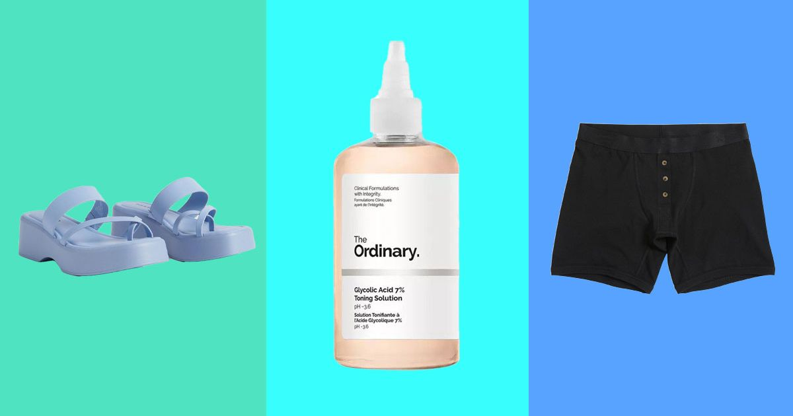

The Power of Self-Expression: A Guide for Trans Youth Shoppers in 2023

When I was 15 years old, I began my journey towards identifying as a transgender man. I remember feeling lost, confused, and alone until I discovered the power of self-expression through shopping. Clothes, accessories, and cosmetics can give transgender youth the tools they need to express their gender identity outwardly. As a result, fashion has become a way of life for me, allowing me to become confident and proud of who I am.
Here are a few examples of how fashion can empower trans youth to feel more confident:
- Wearing a chest binder can reduce dysphoria for transgender men and non-binary individuals who wish to have a more masculine chest appearance. Binders have come a long way since I first started shopping for them!
- Clothes that fit properly according to a person's gender identity can help them feel more comfortable in their body.
- Make-up and skincare products that highlight feminine or masculine features can allow trans individuals to further express their gender identity.
Shopping for Clothes
One of the biggest challenges for trans youth shopping for clothes is finding items that fit properly and align with their gender identity. Here are some tips:
- Find a store that carries gender-neutral or unisex clothing. Places like TomboyX and Wildfang specialize in androgynous fashion.
- Buy clothes that fit the largest part of your body, and then have them tailored to fit the rest of your body.
- Experiment with clothing to find what works best for you. You may discover that dresses make you feel more comfortable than pants, or vice versa.
Shopping for Accessories
Accessories are a great way to express gender identity. Here are some ideas:
- Wearing a chest binder can reduce dysphoria for transgender men and non-binary individuals who wish to have a more masculine chest appearance. Binders have come a long way since I first started shopping for them!
- Bows, jewelry, and other accessories can be used to highlight a more feminine appearance.
Shopping for Makeup and Skincare Products
Makeup and skincare products are another way to express gender identity. Here are some tips:
- There are many makeup brands that cater to transgender individuals, such as Fluide.
- Experiment with makeup and skincare products to find what works best for you. You may discover that you prefer certain brands or types of products over others.
Conclusion
Shopping can be an empowering experience for transgender youth. It provides an opportunity for them to express their gender identity through clothing, accessories, and makeup. If you're a trans youth, don't be afraid to experiment and find what works best for you. Remember, fashion is about expressing yourself, and you deserve to feel confident and proud of who you are.
References:
Hashtags:
- #transgender #transyouth #shoppingguide #genderexpression
- #transfashion #fashionguide #transvisibility #transpower
SEO Keywords:
- trans youth shopping guide
- transgender fashion
- gender expression through fashion
Article Category:
Gender and Fashion
Curated by Team Akash.Mittal.Blog
Curated by Team Akash.Mittal.Blog
Share on Twitter Share on LinkedIn